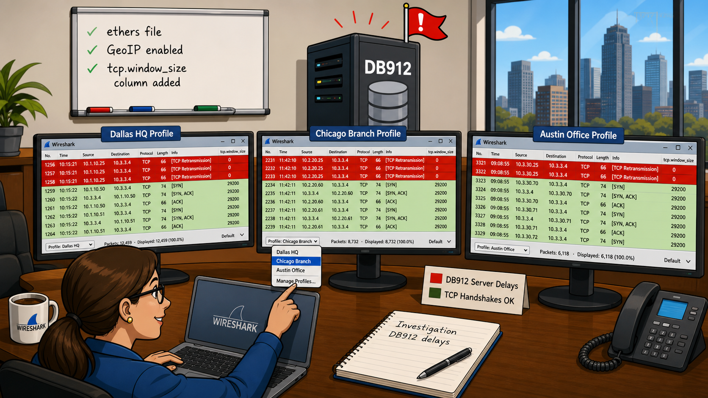

Wireshark profiles let you save completely different configurations — coloring rules, columns, filters, preferences — and switch between them instantly. Each profile lives in its own directory under your Personal Configurations folder.
- Why would a WLAN analyst need different coloring rules than a VoIP analyst, even if they're looking at the same trace file?
- If a profile stores its settings in files on disk, what's the risk when you copy a profile to another machine with a different directory structure?
Customize Wireshark with Profiles
Profiles can be used to work more efficiently with display filters, capture filters, coloring rules, columns and layouts specifically configured for the environment in which you are working. For example, if you work on a network segment at a branch office that consists of routing traffic, web browsing traffic, VoIP traffic and DNS traffic, you might want to create a profile called "Branch 01". This profile might contain coloring rules that help make the interpretation process faster. You might also include a column to show the Window Size field values for TCP communications and an IP DSCP column to note any asynchronous routing of your VoIP traffic.
Figure 163 shows the Wireshark Status Bar. The current profile in use is listed in the right column. In this case we are working with the default profile, but we can quickly choose another profile in the list.

When you create a new profile, Wireshark builds a directory with the same name. The number of files contained in the profile's directory depends on what you have added to your profile. The Default profile uses the configuration files located directly inside the Personal Configuration directory.
Create a New Profile
Right click on the Profile area in the Status bar or select Edit | Configuration Profiles | New to create a new profile. Wireshark will create a new directory using the profile name you specify. This new directory is placed in a \profiles directory under your Personal Configurations directory. You can also rename, copy or delete profiles in this area.
When you shut down Wireshark or change to another profile, the profile in use is saved and automatically loaded again when you restart Wireshark.


Figure 165 shows the contents of a Personal Configuration directory. When we defined our first profile, Wireshark created \profiles in our Personal Configurations directory. Inside the \profiles directory, we have individual profile directories for our various profiles.
There are several files that may be inside the profiles directory — which files exist depend on the settings established when working within a profile. The files may include:
cfilters— capture filter definitionsdfilters— display filter definitionscolorfilters— coloring rulespreferences— protocol and UI preferencesdisabled_protos— disabled protocol listdecode_as_entries— decode-as entriesrecent— recently used settings
Create from a Master Profile First
As of Wireshark 1.8, you are prompted to create your new profile based on an existing profile. This is a fast way to populate a new profile with common settings you use in each profile. Consider making a Master profile that includes basic capture filters, display filters, coloring rules and protocol settings. When you build any new profile, use Create from to define the Master profile as the source. This is a great addition to Wireshark.
Share Profiles
Profiles consist of a number of configuration files in a directory named after the profile itself. For example, if you make a profile called "Corporate HQ," Wireshark creates a "Corporate HQ" directory under the Wireshark \profiles directory. To share the profile, copy the entire "Corporate HQ" directory to another Wireshark system's profile directory.
preferences file from one computer to another. Some settings may not be compatible with the new computer's directory structure or configuration. Two potential conflicts are the default file open directory path and the default capture device name.Wireshark ships with a Default profile, but the real power is creating specialized profiles for different network environments — troubleshooting, corporate, WLAN, VoIP, and security each benefit from distinct coloring rules, columns, and filters.
- Before reading the profile examples, what specific coloring rules and columns would you add to a VoIP profile that you would NOT add to a general troubleshooting profile?
- Why is the Security profile's colorfilters particularly important for detecting compromised hosts?
Profile Types
Create a Troubleshooting Profile
A general troubleshooting profile can help spot issues in your traffic. Such a profile might contain the following customized configurations:
cfilters — The cfilters file contains the capture filters for the local host MAC address and traffic ports:
My MAC: ether host D4:85:64:A7:BF:A3 Not My MAC: not ether host D4:85:64:A7:BF:A3 DHCP: port 67 Inbound SYNs: tcp[tcpflags] & (tcp-syn) != 0 and tcp[tcpflags] & (tcp-ack) = 0 and not src net 10.16
dfilters — The dfilters file contains filters for key types of traffic and triggers on the troubleshooting coloring rules:
TCP Issues: tcp.analysis.flags SYN Packets: tcp.flags==0x0002 HTTP GETs: http.request.method=="GET" Info Packets: frame.coloring_rule.name matches "^I-" Trouble Packets: frame.coloring_rule.name matches "^T-"
colorfilters — Contains colorization overriding false positives and highlighting unusual traffic. G = green background; O = orange; R = red:
I-WinUpdates/G: expert.message=="Window update" I-TCP SYN/R: tcp.flags.syn==1 I-TCP Win/O: tcp.options.wscale.shift==0 T-HTTP-err/O: http.response.code > 399 T-DNS-err/O: !dns.flags.rcode==0 && dns.flags.response==1 T-TCP Delay/O: tcp.time_delta > 2 T-SmallWin/O: tcp.window_size < 1320 && tcp.window_size > 0 && tcp.flags.fin==0 && tcp.flags.reset==0
preferences — The preferences file contains the column settings that work well for troubleshooting:
- TCP: Enable Calculate conversation timestamps
- IP: Disable checksum validation
- Time Column: Set to Seconds Since Previous Displayed Packet
- Add Columns: tcp.window_size, tcp.seq, tcp.nxtseq, tcp.ack, tcp.time_delta
Create a Corporate Profile
A sample corporate profile might contain the following customized configurations:
- cfilters: Capture filters for a key host based on MAC or static IP address, key protocols and ports.
- dfilters: Filters for key hosts, key protocols and web server host names. All display filters should be defined as coloring rules as well so the traffic is easy to find.
- colorfilters: Colorization for unusual traffic — low TCP window size values, client-to-client traffic, and application error responses.
- preferences: Columns including Time Since Previous Displayed Packet, TCP window size, and WLAN frequency/channel.
Create a WLAN Profile
A sample WLAN profile might contain the following customized configurations:
- cfilters: Capture filters for WLAN hosts by MAC address or IP, key protocols and ports. Also includes filters for beacon frames
(wlan[0] != 0x80)and other WLAN traffic types. - dfilters: Filters for all WLAN traffic (
wlan), key hosts, and WLAN-specific types: beacons (wlan.fc.type_subtype==0x08), management frames for a specific SSID (wlan_mgt.ssid=="Corp WLAN1"), and WLAN retries (wlan.fc.retry==1). - colorfilters: Colorization for unusual WLAN traffic — disassociation frames (
wlan.fc.type_subtype==0x0a), retries (wlan.fc.retry==1), and weak signal strength in Radiotap headers (radiotap.dbm_antsignal < -80). - preferences: Columns including Time Since Previous Displayed Packet, TCP window size, WLAN Channel, Radiotap Signal Strength (
radiotap.dbm_antsignal), 802.11 RSSI, and transmission rate.
Create a VoIP Profile
A sample VoIP profile might contain the following customized configurations:
- cfilters: Capture filters for key hosts. Since SIP and RTP traffic is typically UDP, the UDP capture filter (
udp) is used more often than usual. - dfilters: Filters for SIP (
sip) and RTP (rtp) traffic, and various SIP error responses (such assip.Status-Code==401). All display filters should also be defined as coloring rules. - colorfilters: Colorization for SIP error responses and retransmissions (
sip.resend==1). - preferences: Columns for Time since Previous Displayed Packet, TCP window size, and DSCP value (
ip.dsfield.dscp). Enable the RTP protocol preference Try to Decode RTP outside of conversations.
Create a Security Profile
A sample security profile might contain the following customized configurations:
- dfilters: Filters for unusual traffic patterns — IRC traffic with the JOIN command (
tcp matches "(?i)join"), unusual ICMP traffic ((icmp.type==3) && (icmp.code==1 || icmp.code==2 || icmp.code==3 || icmp.code==9 || icmp.code==10 || icmp.code==13)), and ICMP OS fingerprinting ((icmp.type==13 || icmp.type==15 || icmp.type==17)). - colorfilters: Colorization for low TCP window size values, client-to-client traffic, application error responses, and unusual ICMP or suspicious traffic patterns.
- preferences: Columns for web server names (
http.host) and TCP stream Index values (tcp.stream).
Case Studies
One of my customers had thousands of hosts and literally hundreds of applications. Capturing traffic from a client on the network inevitably ended up with a huge amount of traffic to sort through — we wanted to make the trace files easier to manage and analyze.
By creating a new profile for each of the three offices that we visited, we could analyze the traffic faster. The client was primarily interested in slow performance between the clients and one database server in particular — "DB912."
Here are the Wireshark areas we customized in a profile for this client:
- We created a coloring rule for large delays in the traffic from the DB912 server (
ip.src==10.6.2.2 && tcp.time_delta > 0.200). These packets were displayed with a red background and white foreground. - We created a coloring rule for small Window Size field values because this client had Windows XP hosts that had not been configured to use Window Scaling — this coloring rule used a red background and white foreground to alert us to a problem.
- We added two more ports to the HTTP preferences because they used more than the standard set of ports for web browsing to their internal servers.
- We created a special coloring rule for the first packet of the TCP handshake processes (
tcp.flags==0x02). These packets were colored with a dark green background and white foreground. - We created an ethers file that contained the hardware address of the network routers at each office. This made it easy to identify which router the clients' traffic went through.
- We added
tcp.window_sizeandip.dsfield.dscpcolumns to the Packet List pane. - We configured GeoIP and enabled GeoIP lookup in the IP preferences, allowing us to look at the global target information right after the last IP header field.
Using all these customized settings, we could understand and troubleshoot the network problems much faster and more accurately.

Wireshark's profiles enable you to customize Personal Configuration settings to work more efficiently in specific analysis environments. For example, a WLAN profile may have special coloring rules to identify traffic on separate channels and an extra column to indicate signal strength.
You can create an unlimited number of profiles and copy them to other Wireshark systems. Any configuration settings dealing with directory paths on the main Wireshark system may not work properly on other Wireshark systems if the directory structures do not match.
Consider creating profiles for your home environment, your office network, branch offices or wireless networks. You could also build profiles for specific traffic types, such as wireless, database, VoIP or web browsing traffic.